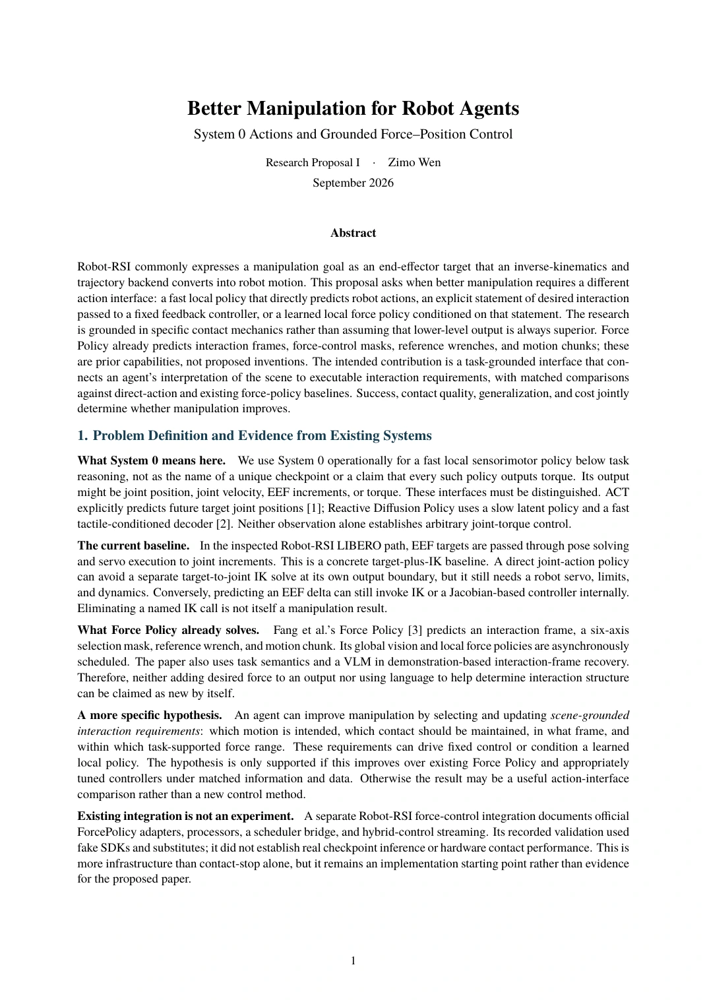

READ ONLINE
Better manipulation
Better manipulation, page 1 of 6

This page could not be loaded. Please try again, or use Open PDF to read the full document.
Choose a page above, or use the ← → arrow keys.
Download this proposal ↓RESEARCH PROPOSALS · SEPTEMBER 2026
Low-level control. Immediate response. GPT-6 + ROS 2.
Better manipulation through System 0 actions and grounded force-position control; agent-generated state machines and broader feedback policies; GPT-6 task orchestration, code repair, and ROS 2 arm execution. Three independent papers, each with a pipeline and concrete experiments.
三份提案：底层控制、即时响应，以及 GPT-6 统筹与代码修正 + ROS 2 底层执行。第三份采用单步末端修正，并单列关节增量接口；VLA 是可选方案。早期中文稿保留作历史版本。
READ ONLINE
Better manipulation, page 1 of 6

This page could not be loaded. Please try again, or use Open PDF to read the full document.
Choose a page above, or use the ← → arrow keys.
Download this proposal ↓